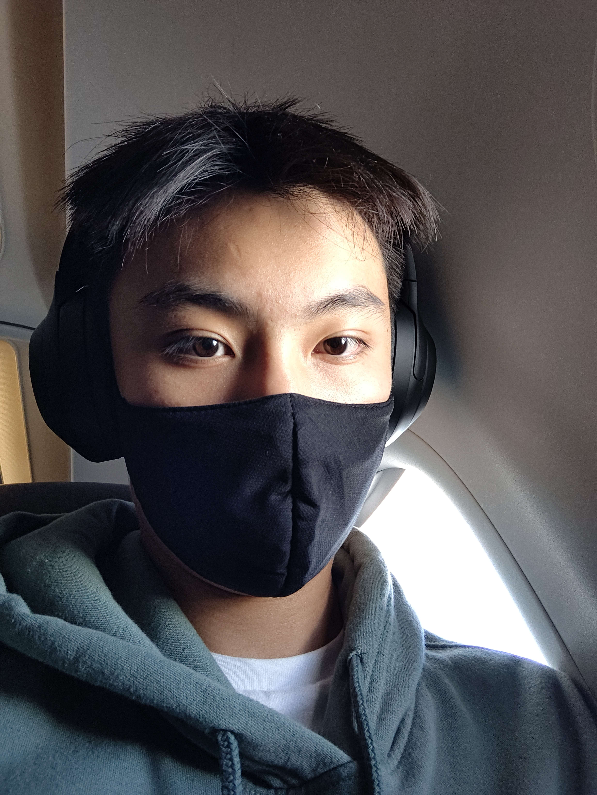

Andrew Wan
Computer Science, Sophomore
Hello! I’m Andrew, and I’m a second-year CS major from Princeton, New Jersey. I enjoy playing tennis, going to the gym, cooking, watching anime, and dabbling in a variety of video games.
- Noodles Fresh
- Champion's Curry
- Chengdu Style

Monkeytype
- 1. I learned that a good way to develop design skills is to study other designs. I can identify good and bad design practices by studying how professional apps make specfic design decisions.
- 2. My favorite part of the article was the Twitter design obsevations. When I'm on Twitter, I normally don't notice the bolds and text language but now I realize how it can affect users subconsciously.
- 3. "You develop your design eye by thinking as if you were the designer of a product."
- 4. 8